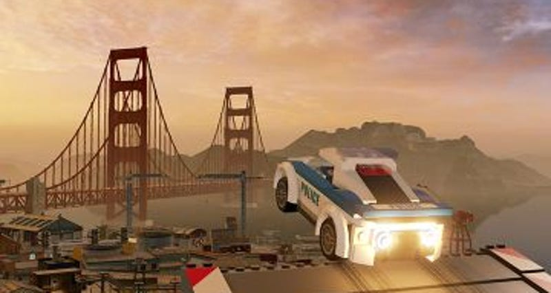
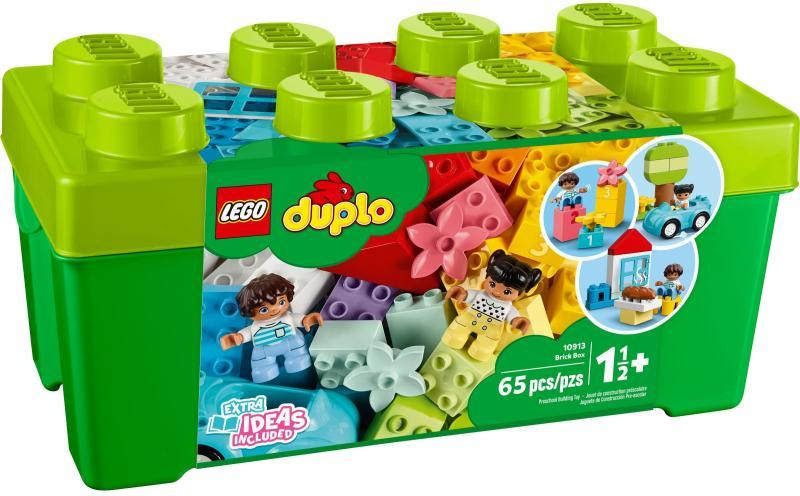
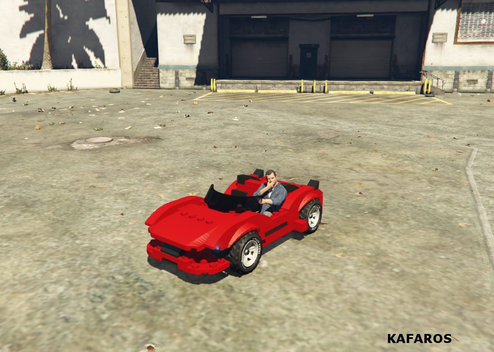
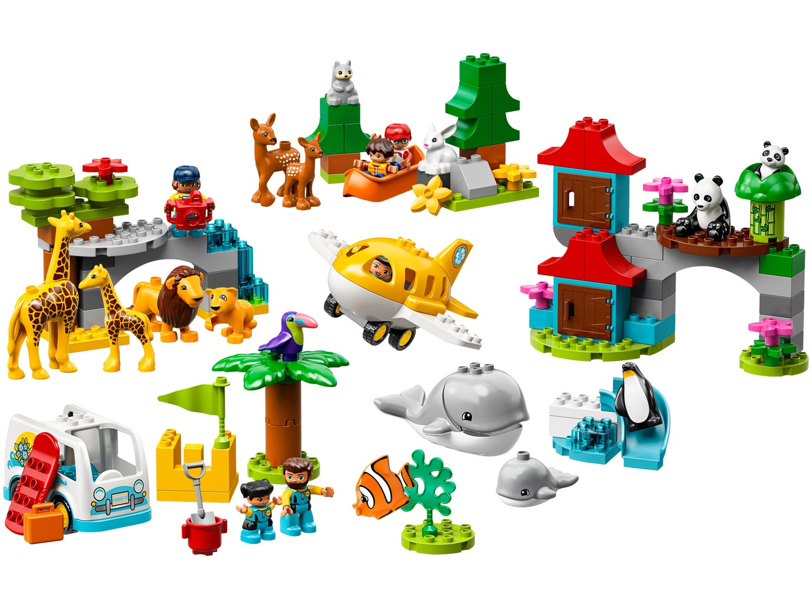

Készítette Tukács Alex
Az utóbbi emberke egy lego karakter melyet meg tudunk találni a filmekben meg a játékban is.
Az alábbi lego az egy duplo. Kicsiknek való. Szőrnyű, rossz méretekben van.
Ilyen a dupló.
A Lego City Undercover, az egy olyan videójáték, melyet a Grand Theft Auto szériáról koppintottak le. Sokkal Jobb. A kisebb korosztálynak eléggé erlgondolkodtató egy videó játék, ugyanis behozza őket a felnőtt életbe.
A dupló rossz..
Sajnálatos módon elég sokan nem játszanak már ezzel a videójátékkal, ugyanis kicsit elavult, és nem felel meg a mai sztandardnak, de szerintem tökéletes. Kihozza belőlem a művészi énem, elgondolkodtat hogy miért ilyen a mai élet, miért van ennyi rossz dolog az életben. Viccen kívül semmit sem tanultam a HTML órákból, mert nem voltam itt. Köszönöm a figyelmet :D